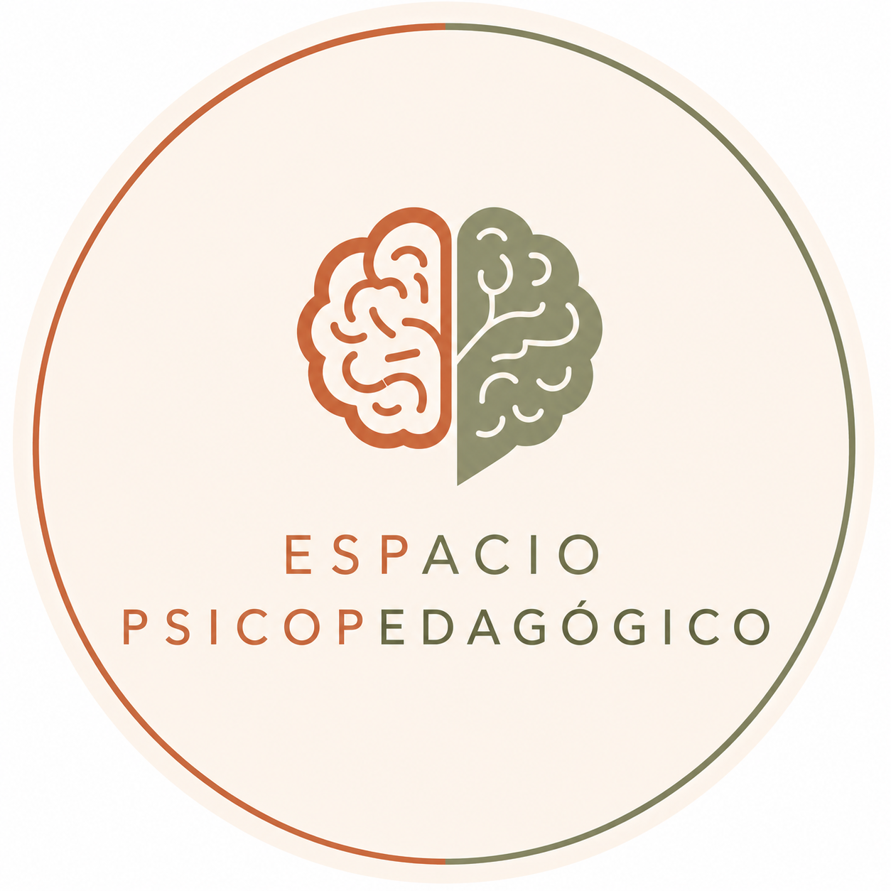

Evaluación psicopedagógica
Proceso de evaluación para conocer fortalezas, dificultades y orientar los pasos a seguir.

Espacio Psicopedagógico Lic. Verónica MalufPsicopedagogía clínica · Banfield · Online
Evaluación y tratamiento psicopedagógico para niños y adolescentes, con una mirada integral, respetuosa y cercana a cada familia.
Psicopedagogía clínica para acompañar aprendizajes, emociones y procesos familiares.
“Creo en la importancia de comprender cada proceso de aprendizaje para descubrir nuevas posibilidades y construir herramientas que favorezcan el desarrollo de cada persona.”
¿Cómo puedo acompañarte?
El trabajo psicopedagógico busca comprender qué está pasando, construir estrategias reales y acompañar a la familia durante el proceso.
Proceso de evaluación para conocer fortalezas, dificultades y orientar los pasos a seguir.
Acompañamiento sostenido para trabajar sobre dificultades de aprendizaje, organización y autonomía.
Intervención en lectura, escritura, comprensión de consignas y producción escrita.
Abordaje de frustración, baja autoestima escolar y rechazo a las tareas o al aprendizaje.
Acompañamiento para adolescentes en la construcción de elecciones posibles y significativas.
Propuestas para acompañar procesos iniciales de lectura y escritura.
Primera consulta
La familia consulta por WhatsApp y conversamos brevemente sobre el motivo de consulta.
Se realiza una entrevista para conocer la historia escolar, familiar y las inquietudes actuales.
Si corresponde, se planifican encuentros de evaluación psicopedagógica.
Se comparten orientaciones, conclusiones y posibles pasos de trabajo.
Cuándo consultar
No siempre indican un trastorno, pero sí pueden mostrar que un niño necesita ser mirado y acompañado de otra manera.
Le cuesta leer, escribir o comprender consignas.
Evita tareas escolares o se frustra con facilidad.
Necesita mucha ayuda para organizarse.
El rendimiento escolar genera preocupación en casa o en la escuela.
Empezá el proceso